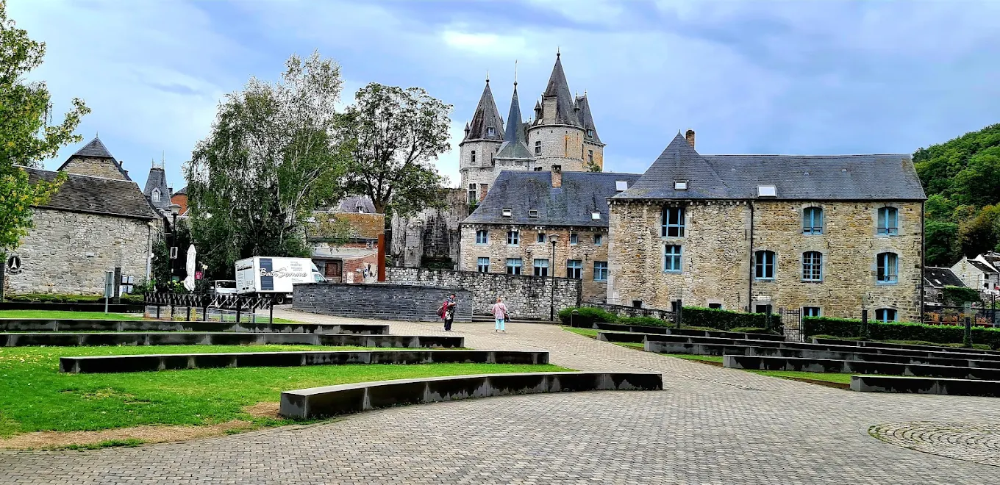
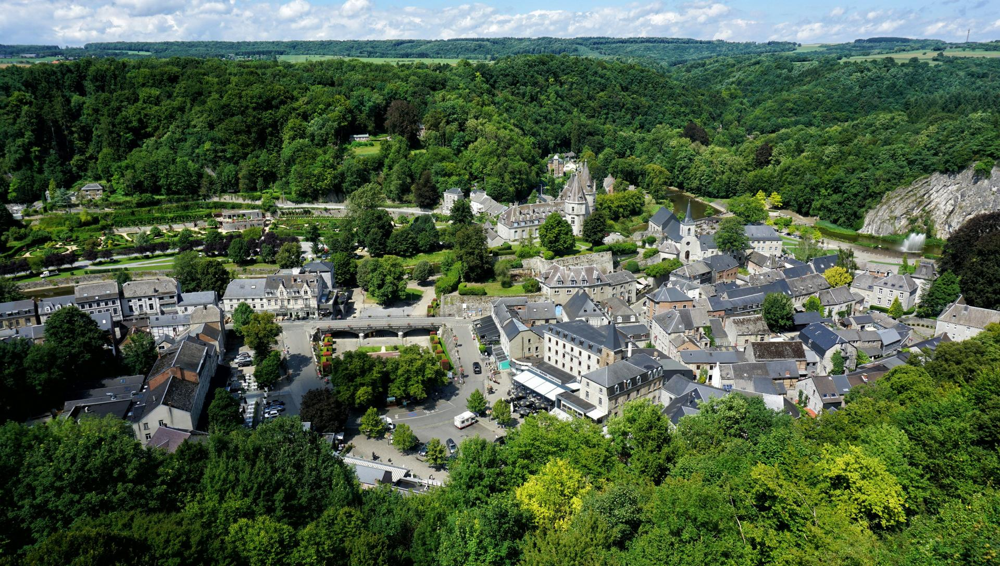
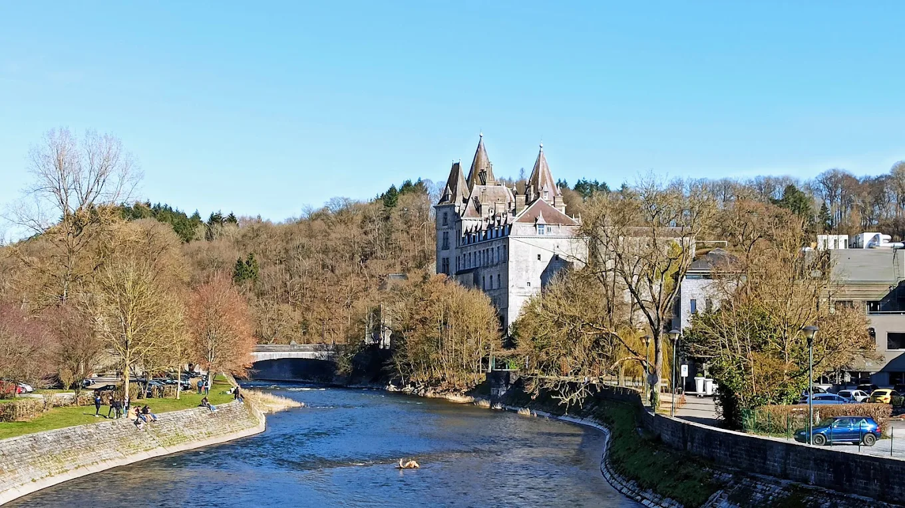
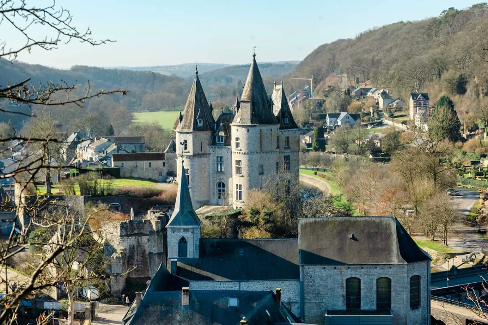
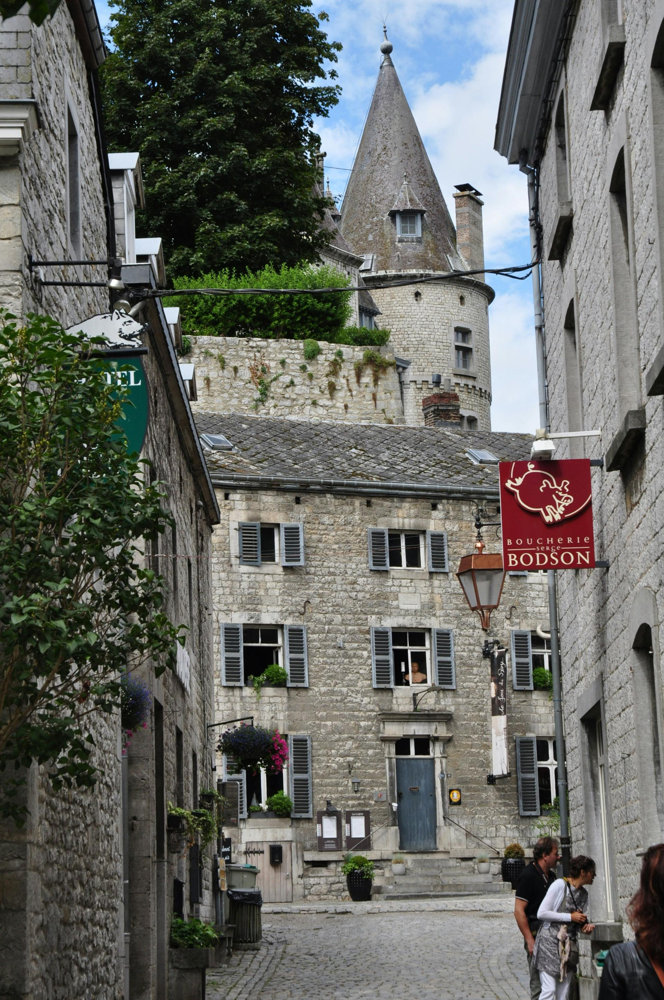
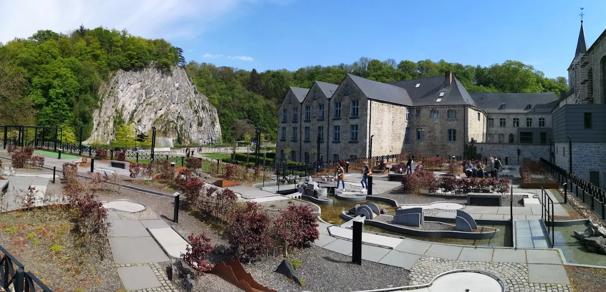
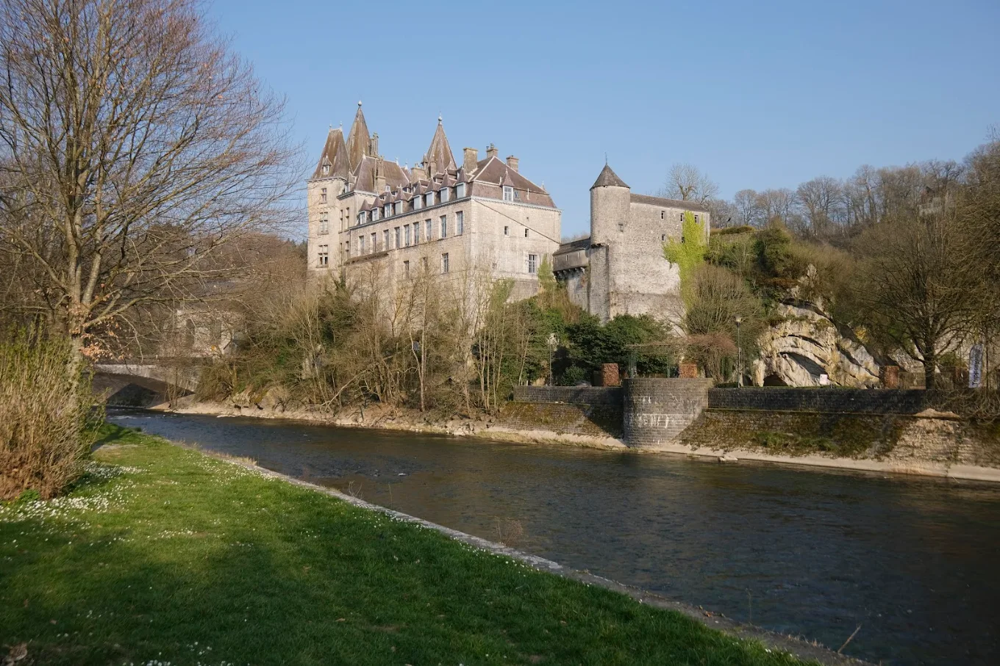
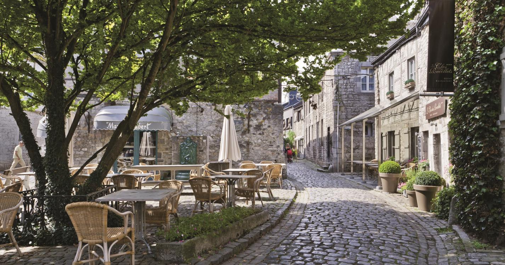
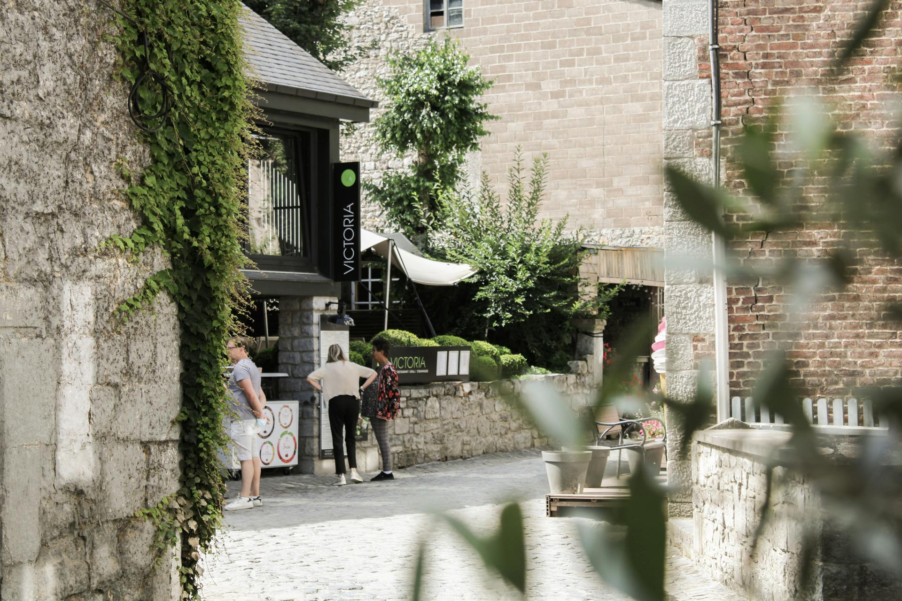
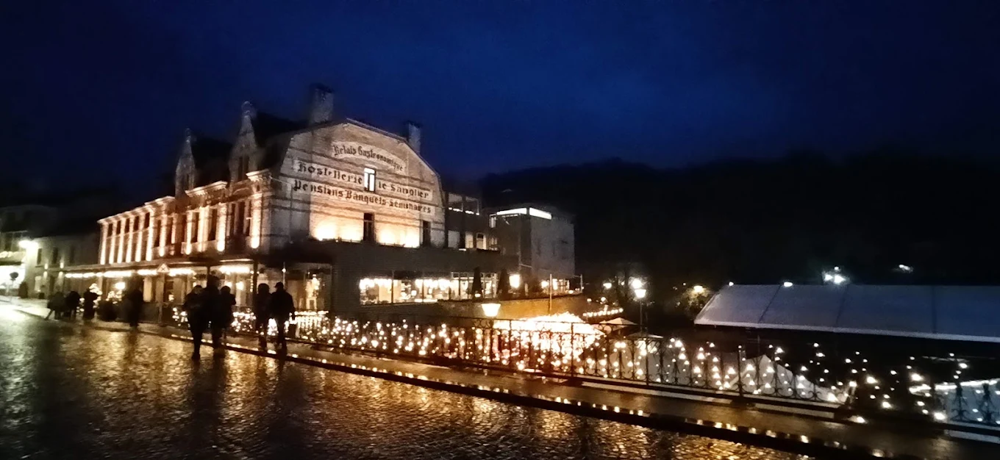

Kasteel van de graven d’Ursel
Het kasteel domineert het stadje vanaf zijn rots. De oorsprong gaat terug tot de middeleeuwen, het huidige uitzicht stamt vooral uit latere eeuwen. Het is privébezit en meestal niet te bezoeken.

Belgische Ardennen · Provincie Luxemburg (Wallonië)
“De kleinste stad ter wereld” - een middeleeuws juweel ingeklemd tussen de Ourthe en steile kalkrotsen.
Durbuy ligt in de Belgische Ardennen, in het noorden van de provincie Luxemburg (Wallonië), aan de Ourthe. De historische kern is ingeklemd tussen de rivier en steile kalkrotsen - een ligging die al eeuwenlang reizigers trekt.
Sinds de gemeentefusie van 1977 omvat Durbuy ook de dorpen Barvaux-sur-Ourthe, Bomal, Bohon, Tohogne en Wéris. Samen tellen ze zo’n 11.000 inwoners, terwijl in het oude centrum slechts enkele honderden mensen wonen.

Durbuy’s verhaal begint op een rots boven de Ourthe en eindigt in het bruisende stadje van vandaag.

De plaats ontstond rond een versterking op een rots boven de Ourthe en was een belangrijke doorgang over de rivier.
Jan de Blinde, graaf van Luxemburg en koning van Bohemen, verleende Durbuy stadsrechten. Daarop is de bekende bewering gebaseerd dat Durbuy de kleinste stad ter wereld is: een historisch stadsprivilege en toeristisch label - geen officiële titel in een lijstje van kleinste steden.
De heerlijkheid kwam via verschillende adellijke families uiteindelijk in handen van de graven d’Ursel, die het kasteel nog steeds bezitten.
Durbuy groeide uit van een rustig stadje tot een belangrijke toeristische trekpleister, met veel horeca en gerestaureerde panden.
Het grotendeels autovrije hart van Durbuy is in een kwartier te doorlopen. Oude kalkstenen huizen, winkeltjes en terrasjes - dit zijn de plekken die je niet mag missen.

Het kasteel domineert het stadje vanaf zijn rots. De oorsprong gaat terug tot de middeleeuwen, het huidige uitzicht stamt vooral uit latere eeuwen. Het is privébezit en meestal niet te bezoeken.

Het centrum is grotendeels autovrij: smalle kasseistroken tussen oude kalkstenen huizen, met winkeltjes en terrasjes om rustig te dwalen.

Een tuin met honderden gesnoeide buxusfiguren - de ene abstract, de andere figuratief. Een van de bekendste attracties van Durbuy.
De oude korenhal: een houten overdekte markthal uit de zeventiende eeuw en een van de meest karakteristieke gebouwen van het stadje.
Het centrale plein waar het meeste leven zit - terrasjes, marktgevoel en het kasteel als achtergrond.
De oude kerk aan de rand van het centrum, een rustig baken in het drukke stadje.
De omgeving staat bekend om actieve vakanties. Van de rivier tot de kalkrotsen - er is voor elk wat wils.

Paddle over de Ourthe door het groene dal.
Veel bewegwijzerde routes en uitkijkpunten over de vallei.
Klimrotsen en een via ferrata in de kalkrotsen.
Klimparcours, zipline en speeltuinen voor gezinnen.
Onder meer rond Barvaux-sur-Ourthe.
In de buurt liggen onder meer de grotten van Hotton.
Het dorp Wéris, deel van de gemeente Durbuy, herbergt dolmens en menhirs uit het neolithicum - een van de belangrijkste megalietensites van het land.
Wéris staat bovendien bekend als een van de “Mooiste dorpen van Wallonië”. Een interessante aanvulling als je meer wilt zien dan het stadje zelf.
De streek staat bekend om zijn specialiteiten - van de slager tot het brouwhuis.
Het visitekaartje van de streek, in talloze brasserieën en restaurants.
Vooral in het najaar op de kaart.
Lokale brouwerijen en ambachtelijke makers.
In de vele kleine winkeltjes van het centrum.
Er zijn zowel eenvoudige brasserieën als gastronomische restaurants, en talloze hotels en gîtes.



Durbuy organiseert in de loop van het jaar verschillende evenementen. Bekend is de kerstmarkt, met lichtslingers en gezellige marktkraampjes die het oude centrum veranderen.
Ook zijn er andere seizoensgebonden activiteiten. De data en het programma wijzigen jaarlijks - check vóör je gaat de website van de toeristische dienst.
Tip: december is de maand van de kerstsfeer - maar controleer altijd de actuele data.
Alles wat je moet weten vóör vertrek.
Lente tot herfst voor buitenactiviteiten; december voor de sfeer van de kerstperiode.
Het stadje zelf is in een halve dag te zien; met activiteiten en omgeving vul je makkelijk een weekend of langer.
Auto’s staan meestal buiten het centrum, op de parkings.
In de zomer, tijdens weekends en vakanties kan het erg druk zijn. Overweeg een bezoek buiten het hoogseizoen.
Durbuy is zeer toeristisch ingesteld, wat zorgt voor drukte en hogere prijzen. Sommigen vinden het daardoor wat “decor” aanvoelen, terwijl anderen het net charmant vinden. Wie authenticiteit zoekt, vindt die vaak in de kleinere dorpen rond Durbuy en in de natuur eromheen.
De data en het programma wijzigen jaarlijks - check vóör vertrek de website van de toeristische dienst.
Een selectie foto’s van het stadje en zijn omgeving - klik op een foto om te vergroten.